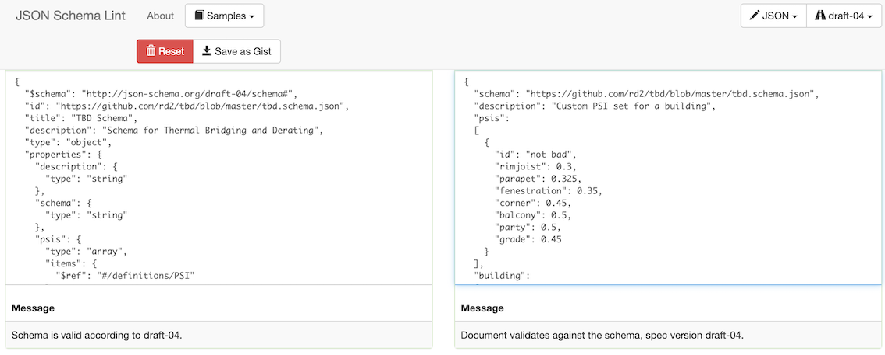

Customization
TBD offers a pull-down menu list of prepackaged psi sets - key for newcomers, especially in the early design stages (see Basics). What happens when design choices aren’t well represented by any of these prepackaged sets? TBD allows users to define multiple custom psi sets, refine them beyond the basic 7 TBD shorthands, and attribute them to different parts of a building model.
As detailed in the Reporting section, a unique tbd.out.json output file is generated (or regenerated) for every TBD run, under an OpenStudio model’s files folder. If one drops a tbd.json file in the same files folder and checks the Load ‘tbd.json’ menu option, TBD will read in custom inputs defined in that file.
Custom building psi set
As a first example, consider the definition of a custom “building” psi set - instead of TBD’s pull-down menu options:
{
"schema": "https://github.com/rd2/tbd/blob/master/tbd.schema.json",
"description": "Custom PSI set for a building",
"psis":
[
{
"id": "not bad",
"rimjoist": 0.3,
"parapet": 0.325,
"fenestration": 0.35,
"corner": 0.45,
"balcony": 0.5,
"party": 0.5,
"grade": 0.45
}
],
"building":
{
"psi": "not bad"
}
}
SCHEMA: Let’s start with the tough part. TBD output & input files are:
- JSON formatted
- structured following a TBD-specific JSON schema
Schema? See this as a set of coded instructions of:
- what’s allowed as TBD input
- how this input should be JSON-formatted.
Pretty much every compiled or assembled computer language has JSON functionality capable of reading in and validating JSON-formatted data. This ensures portability between machine architectures, computer languages and third-party software.
Currently, designers are yet to have access to online tools or BIM-integrated features that would help with JSON formatting and validating of TBD custom inputs. In the meantime, one can copy the content of TBD’s schema and paste it in the left-side window of this free, online JSON Linter. Then copy the example tbd.json content above, and paste in the right-side window:

… the Linter messages inform users of issues related to content, syntax and structure. Another option is to first generate a detailed tbd.out.json file (by checking the Write ‘tbd.out.json’ option), renaming it as tbd.json, and customizing it directly. A combination of both options also works well.
PSIs: In order to refer to a custom psi set, one must first define the custom set itself. TBD JSON “psis” each require a unique identifier (e.g. “not bad”), and the expected TBD shorthands (e.g. “parapet”) with their custom psi values (in W/K per meter). Note that the joint shorthand is optional: if one or more transition edges in a model are to become structural expansion joints, then the custom psi set should hold an additional joint entry.
BUILDING: TBD allows a single “building” JSON entry, where one simply refers to one of the previously defined psi sets. This overrides the pull-down Default thermal bridge option.
Multiple custom psi sets
OpenStudio allows users to define default construction sets for an entire building model, which means any new wall surface added to a model automatically inherits the default wall construction - very handy. OpenStudio also allows users to further refine the solution by allowing default construction sets per individual building story (e.g. ground floor surfaces vs the rest of the building), or on a spacetype basis (e.g. housing units vs common spaces), and so on … down to the individual surface.
TBD offers a mirror solution - custom psi sets:
- for the OpenStudio building as a whole
- per OpenStudio story
- per OpenStudio spacetype
- per OpenStudio space
- per OpenStudio surface
{
"schema": "https://github.com/rd2/tbd/blob/master/tbd.schema.json",
"description": "Benchmark warehouse with custom spacetype psi sets",
"psis":
[
{
"id": "Warehouse Office",
"parapet": 0.300,
"corner": 0.300,
"grade": 0.300
},
{
"id": "Warehouse Fine",
"parapet": 0.500,
"corner": 0.500,
"grade": 0.500
}
],
"building":
{
"psi": "regular (BETBG)"
},
"spacetypes":
[
{
"id": "Warehouse Office",
"psi": "Warehouse Office"
},
{
"id": "Warehouse Fine",
"psi": "Warehouse Fine"
}
]
}
Successfully linking custom psi sets and OpenStudio objects relies on their unique (case-sensitive) id’s: here, “Warehouse Office” and “Warehouse Fine” are unique spacetype object identifiers in one’s OpenStudio model.
A few additional notes:
- here, the “building” psi set refers to a TBD pull-down option
- therefore not necessary to define it as a custom psi set
- this nonetheless overrides the selected pull-down option
- except for “building”, custom psi sets can be partial
- e.g. all fenestration edges inherit from the “building” set
One can also customize individual edges (e.g. expansion joints), which do not have corresponding OpenStudio identified objects:
{
"schema": "https://github.com/rd2/tbd/blob/master/tbd.schema.json",
"description": "Demonstrating a custom edge",
"psis":
[
{
"id": "custom edge",
"fenestration": 0.600
}
],
"edges":
[
{
"psi": "custom edge",
"type": "fenestration",
"surfaces":
[
"Office Front Wall",
"Office Front Wall Window 1"
]
}
]
}
khi inputs
Cantilevered beams, columns, rooftop support blocks, etc. that partially or entirely traverse building envelope surfaces are best represented as point conductances, or khi values (in W/K per point). As there are no corresponding OpenStudio objects, TBD users must fall back onto custom surface attributes:
{
"schema": "https://github.com/rd2/tbd/blob/master/tbd.schema.json",
"description": "Adding khi items",
"khis":
[
{
"id": "column",
"point": 0.7
},
{
"id": "support",
"point": 0.5
}
],
"surfaces":
[
{
"id": "exposed floor 1",
"khis":
[
{
"id": "column",
"count": 10
},
{
"id": "support",
"count": 4
}
]
}
]
}
Here, the OpenStudio surface “exposed floor 1” will inherit 10x 0.7 W/K (= 7 W/K) + 4x 0.5 W/K (= 2 W/K): an extra 9 W/K, in addition to the total W/K per m from surrounding edges (i.e. linear thermal bridges) - automatically calculated by TBD.
Extended shorthands
If one carefully examines a detailed tbd.out.json file, one will notice new or altered TBD shorthands for individual edges e.g., “jamb”, “sill” & “head” instead of “fenestration”, as well as “concave” or “convex” variants e.g.:
{
"psi": "poor (BETBG)",
"type": "jamb",
"length": 2.13349595113502,
"surfaces": [
"Fine Storage Left Door",
"Fine Storage Left Wall"
],
"v0x": 0.0,
"v0y": 20.2682115357827,
"v0z": 2.13349595113502,
"v1x": 0.0,
"v1y": 20.2682115357827,
"v1z": 0.0
},
...
{
"psi": "poor (BETBG)",
"type": "parapetconvex",
"length": 70.10058125157889,
"surfaces": [
"Bulk Storage Right Wall",
"Bulk Storage Roof"
],
"v0x": 45.7177703814647,
"v0y": 30.4785135876431,
"v0z": 8.53398380454007,
"v1x": 45.7177703814647,
"v1y": 100.579094839222,
"v1z": 8.53398380454007
},
Here, “type” designates one of the possible (extended) TBD shorthands. Users may have simply relied on a general “fenestration” psi value, TBD will nonetheless differentiate between fenestration heads, jambs and sills. In addition, TBD will add a “convex” or “concave” suffix to edges linking surfaces that aren’t on the same 3D plane. A simple, rectangular building would have a minimum of 4 convex parapets, but a one-story extension to a 2-story building would (also) have at least one concave parapet.
If one comes across published psi data that distinguishes between fenestration heads, sills and jambs (the BETBG does hold some examples), and/or differences between convex vs concave corners, then one could customize a tbd.json file as follows:
{
"schema": "https://github.com/rd2/tbd/blob/master/tbd.schema.json",
"description": "Enhanced, custom PSI set for a building",
"psis":
[
{
"id": "not bad",
"rimjoist": 0.3,
"parapet": 0.325,
"head": 0.35,
"sill": 0.40,
"jamb": 0.30,
"cornerconcave": 0.45,
"cornerconvex": 0.40,
"balcony": 0.5,
"party": 0.5,
"grade": 0.45
}
],
"building":
{
"psi": "not bad"
}
}
There are obviously many, many possible combinations. TBD’s GitHub repository contains several additional examples. Although this may at first seem complex and intimidating for the average designer or modeller, it remains similar to OpenStudio with regards to default construction sets: it can be very simple, and it only needs to be as complex as the actual design. With such freedom (with both OpenStudio and TBD inputs) comes responsibility - something users and modellers must carefully consider and plan out accordingly.
A side note on dimensioning
Envelope surfaces are usually modelled in OpenStudio based on outer dimensions (i.e. following the exterior cladding, as in ASHRAE 90.1 and Québec’s energy code), or on inner dimensions (i.e. following the interior finishing, as in the Canadian NECB). For most flat edges, this isn’t critical. But for concave or convex corners and parapets, adjustments to psi values may be warranted if there is a mismatch in conventions between the OpenStudio model vs published psi data. For instance, BETBG data reflect an inner dimensioning convention, while ISO 14683 reports psi values for both conventions. The following equation may be used to adjust BETBG psi values for e.g., convex corners, when relying on outer dimensions in OpenStudio.
PSIe = PSIi + Uo * 2(Li - Le), where:
PSIe = adjusted PSI (W/K per m), as TBD input
PSIi = published PSI value (W/K per m)
Uo = average clear field effective U-value (W/K per m2)
Li = from interior corner to "zone of influence" limits (m)
Le = from exterior corner to "zone of influence" limits (m)
The zone of influence usually ranges between 1.0 to 1.2 meters. But the key parameter here is really the resulting wall thickness, and whether the sign is positive or negative - depending if it’s a convex or concave corner. In some cases, this may even produce negative psi values - which TBD allows. The BETBG and ISO standards provide detailed discussions on the subject.